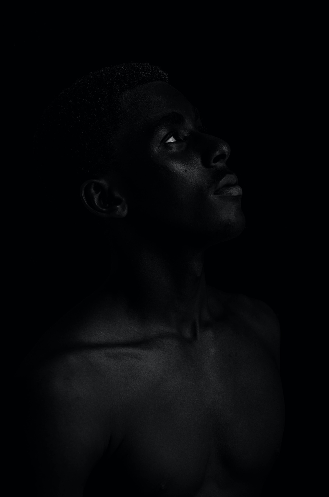
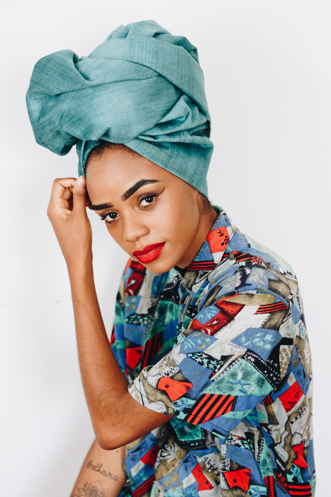
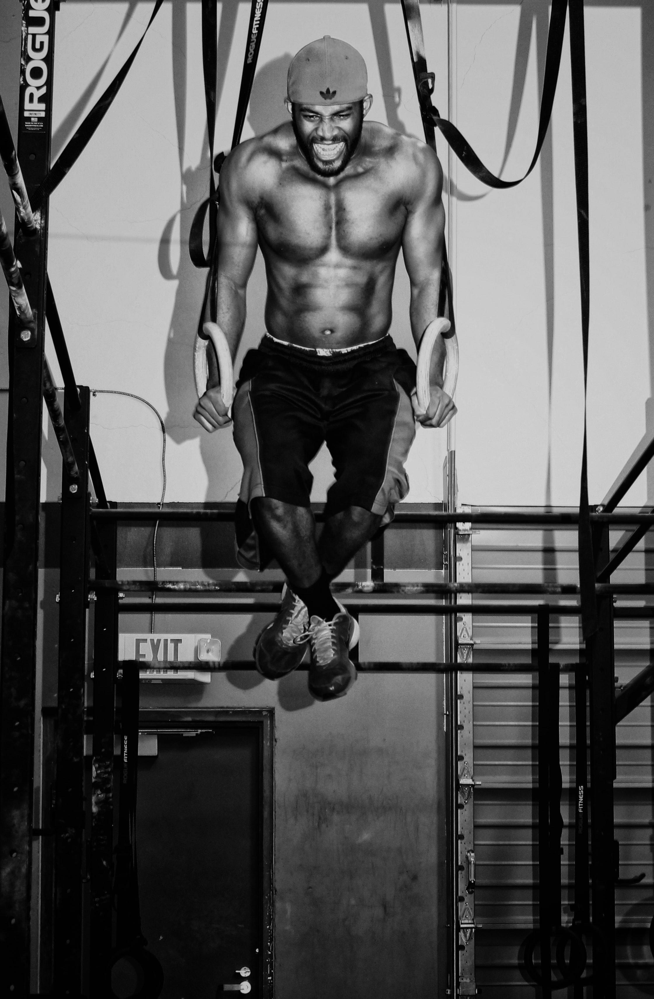
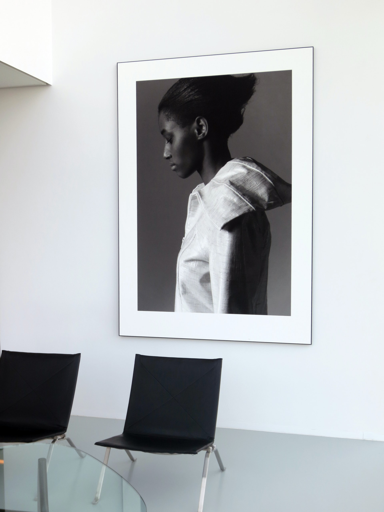
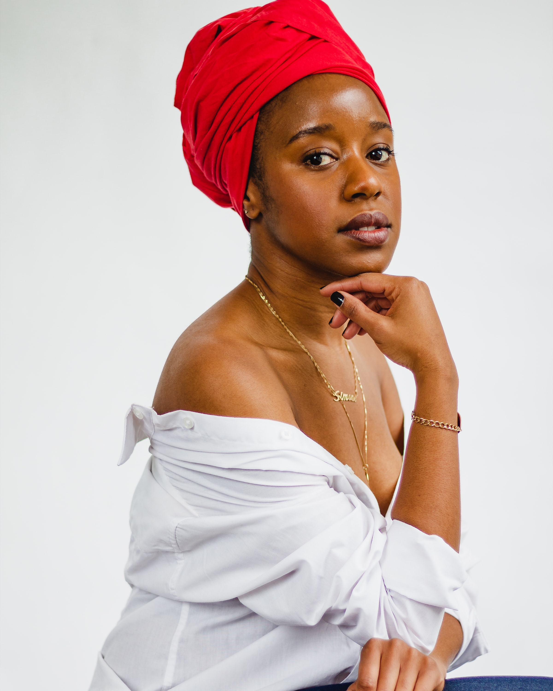
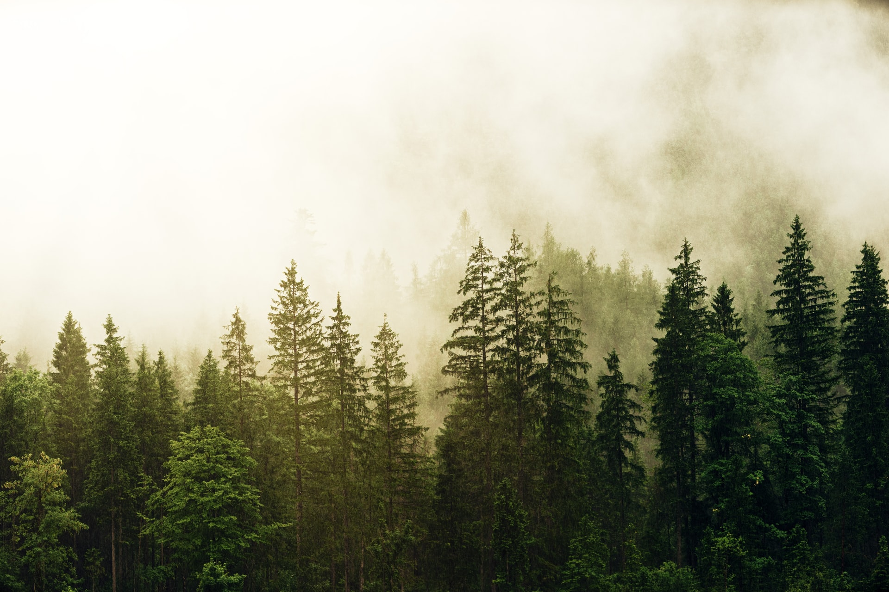
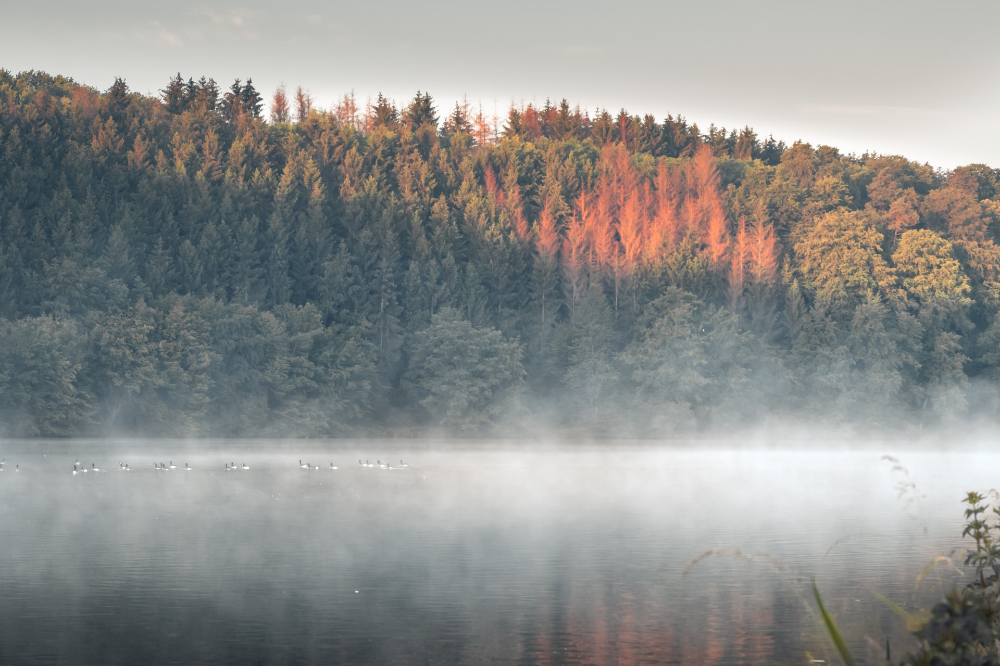

Images
1. Onxy
Original image by Prince Akachi
Original image size: 247kb
Original file dimensions: 2000px x 3624px
Image source

Edited image
Edited image size: 179kb
Edited image dimensions: 600px x 1000px

I wanted to transform this image into a magazine cover therefore I
needed as much definition as possible to help me cut out the model in
order to add a text layer behind his head. If I were using this
online, I would usually pick a smaller file size and lower resolution
so that the file would not have to be greatly reduced, which can lead
to pixelation.
I duplicated the original image and adjusted the levels so that the
outline of the model’s head became clearer. I used the Quick Selection
tool to highlight the model’s head and shoulders and created a mask
layer. Once I had successfully outlined the model I deleted the levels
to return the image back to its original state.
I extended the height of the canvas by 300 pixels to make room for the
title of the magazine. I found a font that is similar to popular
fashion magazines’ fonts and created the “Onyx” title. I ensured the
kerning was not too wide to make it more legible for the reader. I
dragged the text layer underneath the masked model layer so that the
model’s head hid a portion of the title. I created multiple text
layers to add headlines and article titles to the image to transform
into a magazine cover.
I created a barcode using the Lines tool, changing the length and
thickness of each line to replicate a barcode. I added a text layer on
top to add numbers and merge the two layers so that it was one layer.
I saved the image as a PNG as there were very few colours and I wanted
crisp edges.
2. Sketch
Original image by Matheus Ferrero
Original image size: 1.4mb
Original file dimensions: 2400px x 3600px
Image source

Edited image
Edited image size: 251kb
Edited image dimensions: 430px x 360px

I took inspiration from the model’s top and decided to replicate some of the textures and patterns from their top. I wanted to show the evolution of my design in three stages.
For the first stage, I used the Spot Heal Brush tool to remove some of the blemishes on the model’s face. I increased the width of the canvas to make space for the extra models. I used the quick selection tool to cut out the model, pasted the model in a new layer and then duplicated the new model layer twice. I spaced them evenly, using the Guides to align them.
I then created a new background layer behind the model layers and used the Brush tool, with Kyle's Dry Medium – Rough Sketch brush, to draw a pattern in different colours. I used the same brush, in a smaller size, to sketch the outline of the model’s shirt and headwrap. I duplicated the outline layer and aligned it with the third model then created a new layer and coloured in the shirt and headwrap and added hoop earrings
3. Thor
Original Image by Edgar Chaparro
Original image size: 714kb
Original file dimensions: 2240px x 3625px
Image source

Edited image
Edited image size: 315kb
Edited image dimensions: 560px x 857px

To create this thundercloud image, I created a duplicate for the original image. Using the Quick Select tool, I outlined the model and deleted as much of the background image as possible. I then used the Eraser tool to remove the lines left by the Quick Selection tool. I zoomed in on the outline of the model to ensure that I had removed the background, ensuring that the model had smooth edges. I used the Clone tool with a hard edge to get rid of the sports logo on his cap by cloning the area next to it.
I used the same cutting technique to cut around the two skulls and changed their sizes to fit over his chest and cap. I warped the shape of the ram’s skull so the tops of the horns aligned with the model’s shoulders. I created a black and white filter layer to change the colour of the skulls to keep them in line with the monochromatic theme.
I created a new layer and used the Fill tool to turn the layer black. I created a separate layer on top of the black layer and used the 1200px soft edge Brush, and adjusted the colour palette picker to a dark grey to create a glow effect behind the model. I created a second glow layer and repeated the steps to create brighter glows around the model’s hands as I would be adding lightning strikes and wanted to highlight the source of the lightning bolts.
Cloud and Lightning Brushes
I created the clouds and lightning bolts by using images from Unsplash and transforming them into brushes. I did this by desaturating the images turning them black and white. I then inverted the images so that the cloud/lightning became black. I adjusted the levels so that the contrast was very stark. I used the brush tool, in white, and painted over parts of the image that I did not need to use, leaving a cloud or lightning bolt and saved the images as a brush present. With these new brushes I was able to change their size and orientation by transforming each cloud or lightning layer to create a lightning storm around the model and adjusted the lightning bolts to look as if they were shooting out from the model’s hand. I used the soft edge brush tool to add highlights in various shades of grey to add depth to the clouds.
To complete the image I added the fine dots Mezzotint pixelated filter to add some texture to the mage.
4. Afro
Original Image by Jackson David
Original image size:4.52mb
Original file dimensions: 4000px x 6000px
Image source
.jpg)
Edited image
Edited image size: 179kb
Edited image dimensions:

I created this logo by creating a new brush using the same technique that I used in the Thor image. I painted most of the image white as I only wanted to use the model’s hair for the logo.
I created a new file and used the Fill tool to make the background pink. I wanted to create a logo that was reminiscent of the 1970s so used HWT Mardell font to spell the first three letters of Afro. I use the newly created brush tool to create the ‘O’, ensuring that it had the same leading as the other letters. I linked the text layer and the brush layer so that the layers moved as one and duplicated these two layers twice. I used the colour palette tool to Create a pastel pink for the bottom layer, then I turned the middle layer white and the top player black for legibility.
I staggered the layers by ensuring the bottom layer was central and moved the subsequent layers to the right. I used the guides to ensure that the top of the bottom of the letters were aligned. Due to the shape of the Afro hair. I had to increase the leading to make space for all three layers of the Afro brush whilst making sure that Afro was still legible.
5. Bride Printing
Original image by You & Your Wedding
Original image size: 52mb (reduced for website to 7.31mb)
Original file dimensions: 9924px x 14027
Original images by Jean-Philippe Delberghe
Original image size:265kb
Original file dimensions: 1920px x 2560px
Image source


Edited image
Edited image size: 179kb
Edited image dimensions:

I wanted to create a painting effect for this image. I scanned the image and converted it from PDF to JPEG and reduced the resolution from 1200 DPI to 300 DPI so that the image would not be pixelated in Photoshop or freeze the computer after each adjustment. Upon completion I reduced the resolution to 72 DPI as it is the best resolution for web images.
I used the Quick Selection tool to outline the model and created a mask to hide the text and background and added a new white layer behind the model. I used the black Brush tool on the mask layer to delete the background colour between the model’s torso and arms.
As my computer was not able to use the Oil Paint filter to create this effect, I used the Diffuse filter and rotated the image ¼ turn clockwise eight times until I achieved the desired oil painted effect. After each full turn, I used the Smart Sharpen tool to sharpen the image that was becoming blurred due to the diffused filters that were being applied.
During this process some yellow lines appeared on the model’s face which reduced the detail of her features. Therefore, I used the Quick Selection tool to select the model’s face from the original image, copied it and pasted it as a new layer on top of the oil painting layer and adjusted the opacity to blend the layers together.
I duplicated the painting layers twice. For the top layer I used the High Pass filter to add more detail back into the image and for the second layer I used the Cutout Layer filter in the Filter Gallery to add some soft definition back into the image. For both of these layers I reduced the opacity to 30% to add depth to the image.
I adjusted the levels, colour balance and vibrancy to further enhance the image to create the oil painting effect. Two purple spots that had been created during the diffuse/rotation/sharpen process, therefore I used the Eyedropper tool to match the colour of the dress, created on a separate layer and used the Brush tool to cover the spots.
I found an empty picture frame image and used the Fill tool to change the colour of the frame from white to black. I copied the layers from the bridal image Into the photo frame image. I used the Transform and Warp tool to ensure that the white background from the bridal photo fit correctly in the frame. To make it look like a real painting I use the Brush tool to sign my name in the bottom corner.
I decided to save this as a JPEG using the save for web function to reduce the size of the photo from 24mb to 113 kb.
6. Couture
Original image by by Dhivya Subraman, Tobias Rademacher & Johannes Plenio
Original image sizes: 507kb (Subraman), 507kb (Rademacher) & 507kb (Plenio)
Original image dimensions: 2400px x 3000px (Subraman), 1920px x 1280px (Rademacher) & 1920px x 1280px (Plenio)

Dhivya Subraman

Johannes Plenio

Tobias Rademacher
Edited image
Edited image size: 312kb
Edited image dimensions:600px x 750px

I used three images to create this Couture image. I created a duplicate of the model image and placed the two forest landscapes behind the duplicate image, the top image behind her head and the bottom image was transformed to fill her shirt. I used the Quick Selection tool to select her shirt and deleted the contents. I zoomed in and used the Quick Selection tool to ensure that all of the shirt had been deleted and used the Eraser tool to delete any lines that might have been left behind. I use the same process on her head wrap to reveal the images behind.
I wanted to create a summer hat instead of a headwrap so I used the Mask tool and a black soft edged Brush to trace the shape of the hat.
It was too bright for the wistful aesthetic that I wanted to create, so I used a black and white filter on top of the model image and a Gradient Fill layer. To further enhance the wistful nature of the image I also added a Mezzotint pixelated layer with small dots. I completed the image by using the Curves tool to slightly alter the tones of the finished product.
GIF
.jpg)
Edited GIF
Edited GIF size: 1.15mb
Edited GIF dimensions: 266px x 266px

For this GIF I wouldn’t want to use different variations of crowns that I sourced from Unsplash.com. I used the Quick Selection tool to cut out each of the crowns and created Masks for the smaller cut out detail which gave me the option to undo any mistakes I had made. I added them as new layers to the main image and adjusted the crowns to fit the model’s head using the transform tool.
I found a selection of backgrounds from Unsplash.com, with interesting textures that colours that I believe represent black culture and royalty, and created a new frame using each of these backgrounds. I created a text layer on top of the black image and edited it after each cycle of backgrounds. When I changed the word I also changed the crown. I changed the duration of each frame to 0.2 seconds to create the flashing effect and kept each word visible for approximately 1.5 seconds to ensure legibility.
To ensure all the words were aligned I used the guides so that each word lined up at the bottom. I changed the font size of ‘royalty’ to ensure that it fit within the parameters of the black image, resulting in the word being shorter than the first two which was visually jarring. Therefore I stretched the letters by 10% so that there was not an obvious difference. Had I stretched it further, the font would have been warped beyond recognition.
Whilst creating this GIF I ensured that I continued to play the animation so that the text was legible and there was no movement of the text or background images between each frame.
I used the “save for web” function to save it as GIF opting to have 256 colours so that the background images were not lacklustre. I chose to make it a square so that it could run on Instagram, a social media platform for picture sharing, without having to be readjusted.
Wireframes
Homepage

This is the homepage. It comprises of a logo, which is centered on mobile screens and on the right hand side for iPad and laptop/desktop screens. The black bordered box represents the menu and the blue box at the bottom of the page is the footer. This design is replicated across the site.
The wedding countdown is hosted on the homepage. The user is able to click into the calendar box (The white box) and they are presented with a calendar to help them pick their date. The days until their wedding will displayed in a large font underneath the calender once the user has input their wedding date.

The planner page has a similar layout to the other pages, in that it has the logo, navigation bar, footer, the title of the page and a hero image. Underneath the image will be a short introduction and description about how to use the tasklists.
The tasklists will be displayed as individual tasklist cards which are broken into milestones (e.g. 18 months until the wedding day, 12 months, 9 months etc.) The green buttons signify the done button which the user will click when they have completed a task. The red button is a reset button which will return the default list. The white and gray box represents an input field and a submit button so the user is able to add their own bespoke tasks. The planner utilises local storage so that the current last of the list will be saved.

The Gift List contains of gift cards which stores the name of the gift, the price and an image. The gift description sits alongside the cards on a desktop and iPad but jumps underneath the card for mobile
For the scope of this project, the buttons redirect to a 404 page. If I were to develope this page further, I would add payment software and create a shareable link so that the user could forward their gift list link to their guests.

The About page and Relaxation page have very similar layouts comprising of a navigation bar, the logo, an images with the copy underneath. For mobile devices, the logo is repositiond to the top and center of the page, with the navigational bar positioned centrally underneath and the image width and copy width spans the page
Bibliography
-
Akachi, P., 2018. Black Man In Darkness. [image] Available at:
[Accessed 4 June 2020].
-
Chaparro, E., 2019. Man On Rings In Gym. [image] Available at:
[Accessed 4 June 2020].
-
David, J., 2019. Man With Afro. [image] Available at:
[Accessed 19 June 2020].
-
Ferrero, M., 2019. Woman In Headwrap. [image] Available at:
[Accessed 4 June 2020].
-
Kamanke, M., 2019. Man In Prayer. [image] Available at:
[Accessed 4 June 2020].
-
Subraman, D., 2019. Beautiful Black Woman. [image] Available at:
[Accessed 4 June 2020].
-
You & Your Wedding k, 2020. Modern Romance under £1,500. (Jan/Feb
2020), p.50.